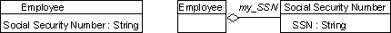
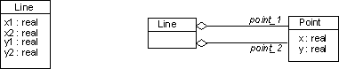

Roles and Activities >
Developer Role Set >
Roles and Activities >
Developer Role Set >
 Implementer >
Implementer >
 Implement Component
Implement Component
Roles and Activities >
Developer Role Set >
Implementer >
Implement Component
Activity:
| ||||||||||||||
Purpose
|
|
Steps
There is no strict order between the steps. Start implementing the operations, and implement associations and attributes as they are needed to be able to compile and run the operations. |
|
| Input Artifacts: | Resulting Artifacts: |
| Role: Implementer | |
| Workflow Details: |
Note: implementation and modification of components takes place in the context of configuration management on the project. Implementers are provided with a private development workspace (see Activity: Create Development Workspace) in which they do their work, as directed by Artifact: Work Orders. In this workspace, source elements are created and placed under configuration management, or modified through the usual check out, edit, build, unit test, and check in cycle (see Activity: Make Changes). Following the completion of some set of components (as defined by one or more Work Orders and required for an upcoming build), the implementer will deliver (see Activity: Deliver Changes) the associated new and modified components to the subsystem integration workspace, for integration with the work of other implementers. Finally, at a convenient point, the implementer can update (or rebaseline) the private development workspace so that it is consistent with the subsystem integration workspace (see Activity: Update Workspace).
Follow the Programming Guidelines when implementing the classes.
The primary basis for implementation is the classes, with public operations, attributes and associations. It is important be aware that not all public operations, attributes and associations are defined during design.
The secondary basis for implementation is the use-case realizations, which shows how the classes and objects interact to perform the use case.
It is recommended that you implement the classes incrementally; compile, link and run some regression tests a couple of times a day.
Before you implement a class from scratch, consider adapting existing implementation classes, typically by subclassing or by instantiation.
To implement operations, do the following:
Many operations are simple enough to be implemented straight away from the operation and its specification.
Nontrivial algorithms are primarily needed for two reasons: to implement complex operations for which a specification is given, and to optimize operations for which a simple but inefficient algorithm serves as definition.
Choosing algorithms involves choosing the data structure they work on. Many implementation data structures are container classes, such as, arrays, lists, queues, stacks, sets, bags, and variations of these. Most object-oriented languages, and programming environments provide class libraries with these kinds of reusable components.
New classes may be found to hold intermediate results for example, and new low-level operations may be added on the class to decompose a complex operation. These operations are often private to the class, that is, not visible outside the class itself.
Write the code for the operation, starting with its interface statement, e.g. the member function declaration in C++, subprogram specification in Ada, or method in Visual Basic. Follow the Programming Guidelines.
The state of an object may be implemented by reference to the values of its attributes, with nothing special for representation. The state transitions for such an object will be implicit in the changing values of the attributes, and the varying behaviors are programmed through conditional statements. This solution is not satisfactory for complex behavior because it usually leads to complex structures which are difficult to change as more states are added or the behavior changes.
If the component's (or its constituents') behavior is state-dependent, there will typically be one or more statechart diagrams which describe the behavior of the model elements which constitute the component. These statechart diagrams serve as an important input during implementation. For more information, refer to Guidelines: Statechart Diagram.
The state machines shown in statechart diagrams make an object's state explicit and the transitions and required behavior are clearly delineated. A state machine may be implemented in several ways:
State machines with concurrent substates may be implemented by delegating state management to active objects - one for each concurrent substate - because concurrent substates represent independent computations (which may, nevertheless, interact). Each substate may be managed using one of the techniques described above.
If a class or parts of a class can be implemented reusing an existing class, use delegation rather than inheritance.
Delegation means that the class is implemented with the help of other classes. The class references an object of the other class by using a variable. When an operation is called, the operation calls an operation in the referenced object (of the reused class), for actual execution. Thus, you can say that it delegates responsibility to the other class.
A one-way association is implemented as a pointer - an attribute which contains an object reference. If the multiplicity is one, then it is implemented as a simple pointer. If the multiplicity is many, then it is a set of pointers. If the many end is ordered, then a list can be used instead of a set.
A two-way association is implemented as attributes in both directions, using techniques for one-way associations.
A qualified association is implemented as a lookup table (for example, a Smalltalk Dictionary class) in the qualifying object. The selector values in the lookup table are the qualifiers, and the target values are the objects of the other class.
If the qualifier values must be accessed in order, then the qualifiers can be arranged into a sorted array or a tree. In this case, access time will be proportional to log N where N is the number of qualifier values.
If the qualifiers are drawn from a compact finite set, then the qualifier values can be mapped into an integer range and the association can be efficiently implemented as an array. This approach is more attractive if the association is mostly full rather than being sparsely populated and is ideal for fully populated finite sets.
Most object-oriented languages and programming environments provide class libraries with reusable components to implement different kinds of associations.
Implement attributes in one of three ways: use built-in primitive variables, use a reusable component class, or define a new class. Defining a new class is often more flexible, but introduces unnecessary indirection. For example, an employee's Social Security number can either be implemented as an attribute of type String or as a new class.

Alternative implementations of an attribute.
It may also be the case that groups of attributes are combined into new classes, as the following example shows. Both implementations are correct.

The attributes in Line are implemented as associations to a Point class.
If a design error is discovered in any of the steps, rework feedback has to be provided to the design. If the required change is small, and the same individual is designing and implementing the class, then there is no need for a formal change request. The individual can do the change in the design.
If the required change affects several classes, for example a change in a public operation, then a formal change request should be submitted to a CCB (change control board). See Activity: Fix a Defect.
Purpose
|
| Tool Mentors |
Before you start unit testing, there are some checks you can do. Testing is more expensive, so try to do some of the following:
|
Rational Unified
Process
|